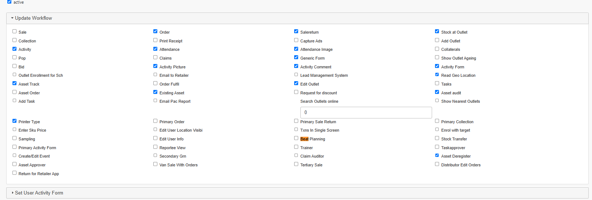
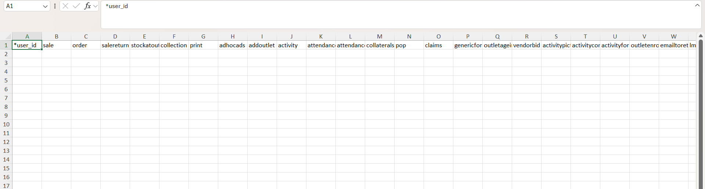

What are Master User Workflows?
Think of them as master switches at the platform level. Each workflow corresponds to a feature, Attendance, Sale, Order, Claims, and more. If a workflow is turned off, that feature is unavailable to the user entirely, regardless of their role.
Common workflows
| Workflow | Controls |
|---|---|
attendance | Attendance marking on the app |
attendanceimage | Photo capture during attendance |
sale | Secondary sales transactions |
order | Order placement by field users |
claims | Expense / travel claims |
beatplanning | PJP / tour program planning |
lms | Lead Management System |
tasks | Task module for field users |

Updating via the user edit page
The simplest way to switch a workflow on or off for one user is directly from their user record, open the user, find the Workflows section, and toggle the feature you need.
Updating via MDM
Changing workflows for many users at once? Use the Upload/Update User Workflow MDM.
Download the template
Enter the User ID
One row per user you're updating.
Enter
1in the workflow columnAgainst whichever workflow (e.g.
attendance,claims) you want to switch on for that user.
User ID + workflow column set to 1 Upload via
/mdms
TipIf a feature you've configured (a form, a scheme, a target) isn't showing up on the app for a user, check the relevant workflow here first, it's a common root cause.
Was this guide helpful?